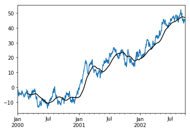
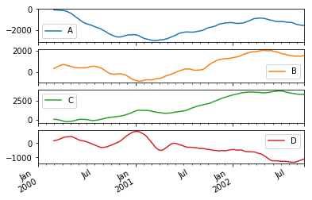
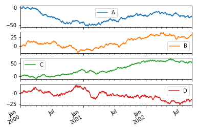
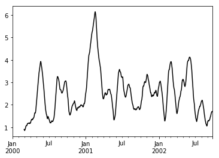
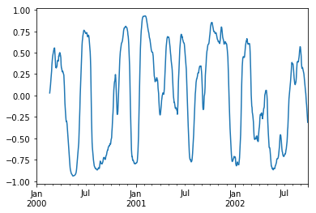
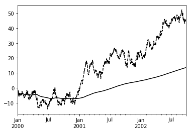
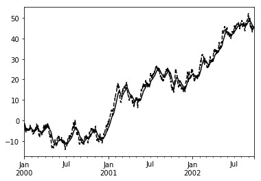

1. 统计分析
pandas本身定位是表格工具,算法不是他的主要目标,所以他内置的算法只是坎坎够用,pandas本身依赖numpy,因此numpy有的统计方法他都有,比如观察他的均值方差标准差什么的,本文依然使用iris来作为源数据
import pandas as pd
import matplotlib.pyplot as plt
%matplotlib inline
iris_data = pd.read_csv("./source/iris.data",header = None,encoding = "utf-8",
names=["sepal_length","sepal_width","petal_length","petal_width","class"])
iris_data.describe()
| sepal_length | sepal_width | petal_length | petal_width | |
|---|---|---|---|---|
| count | 150.000000 | 150.000000 | 150.000000 | 150.000000 |
| mean | 5.843333 | 3.054000 | 3.758667 | 1.198667 |
| std | 0.828066 | 0.433594 | 1.764420 | 0.763161 |
| min | 4.300000 | 2.000000 | 1.000000 | 0.100000 |
| 25% | 5.100000 | 2.800000 | 1.600000 | 0.300000 |
| 50% | 5.800000 | 3.000000 | 4.350000 | 1.300000 |
| 75% | 6.400000 | 3.300000 | 5.100000 | 1.800000 |
| max | 7.900000 | 4.400000 | 6.900000 | 2.500000 |
可以看到各个列的最常见统计学指标
1.1. 相关性
numpy只默认支持协方差矩阵的计算
他们都可以带参数min_periods关键字，该关键字为每个列对指定所需的最小观测值数，以获得有效的结果
- 协方差矩阵
iris_copy = iris_data.copy()
iris_cov = iris_copy[iris_copy.columns[:-1]].T.cov()
iris_cov[:5]
| 0 | 1 | 2 | 3 | 4 | 5 | 6 | 7 | 8 | 9 | ... | 140 | 141 | 142 | 143 | 144 | 145 | 146 | 147 | 148 | 149 | |
|---|---|---|---|---|---|---|---|---|---|---|---|---|---|---|---|---|---|---|---|---|---|
| 0 | 4.750000 | 4.421667 | 4.353333 | 4.160000 | 4.696667 | 4.860000 | 4.215000 | 4.595000 | 3.9650 | 4.493333 | ... | 2.650000 | 3.090000 | 2.341667 | 2.730 | 2.596667 | 2.850000 | 2.741667 | 2.915000 | 2.475000 | 2.600000 |
| 1 | 4.421667 | 4.149167 | 4.055000 | 3.885000 | 4.358333 | 4.515000 | 3.907500 | 4.284167 | 3.7075 | 4.210000 | ... | 2.725000 | 3.128333 | 2.409167 | 2.805 | 2.661667 | 2.906667 | 2.820833 | 2.955833 | 2.504167 | 2.628333 |
| 2 | 4.353333 | 4.055000 | 3.990000 | 3.813333 | 4.303333 | 4.453333 | 3.861667 | 4.211667 | 3.6350 | 4.120000 | ... | 2.446667 | 2.850000 | 2.161667 | 2.520 | 2.396667 | 2.630000 | 2.531667 | 2.688333 | 2.281667 | 2.396667 |
| 3 | 4.160000 | 3.885000 | 3.813333 | 3.656667 | 4.110000 | 4.256667 | 3.688333 | 4.031667 | 3.4850 | 3.953333 | ... | 2.493333 | 2.856667 | 2.218333 | 2.580 | 2.443333 | 2.653333 | 2.571667 | 2.718333 | 2.321667 | 2.440000 |
| 4 | 4.696667 | 4.358333 | 4.303333 | 4.110000 | 4.650000 | 4.810000 | 4.175000 | 4.541667 | 3.9150 | 4.433333 | ... | 2.530000 | 2.963333 | 2.238333 | 2.610 | 2.483333 | 2.726667 | 2.615000 | 2.798333 | 2.381667 | 2.503333 |
5 rows × 150 columns
皮尔逊相关度
这个可以使用numpy来求了
import numpy as np
iris_copy = iris_data.copy()
iris_ = iris_copy[iris_copy.columns[:-1]]
pd.DataFrame(np.corrcoef(iris_.as_matrix()))[:5]
| 0 | 1 | 2 | 3 | 4 | 5 | 6 | 7 | 8 | 9 | ... | 140 | 141 | 142 | 143 | 144 | 145 | 146 | 147 | 148 | 149 | |
|---|---|---|---|---|---|---|---|---|---|---|---|---|---|---|---|---|---|---|---|---|---|
| 0 | 1.000000 | 0.995999 | 0.999974 | 0.998168 | 0.999347 | 0.999586 | 0.998811 | 0.999538 | 0.998077 | 0.996552 | ... | 0.597825 | 0.685581 | 0.574649 | 0.584668 | 0.603048 | 0.646865 | 0.605998 | 0.653473 | 0.633917 | 0.633158 |
| 1 | 0.995999 | 1.000000 | 0.996607 | 0.997397 | 0.992233 | 0.993592 | 0.990721 | 0.997118 | 0.998546 | 0.999033 | ... | 0.657750 | 0.742643 | 0.632574 | 0.642756 | 0.661387 | 0.705879 | 0.667114 | 0.708983 | 0.686257 | 0.684835 |
| 2 | 0.999974 | 0.996607 | 1.000000 | 0.998333 | 0.999061 | 0.999377 | 0.998438 | 0.999605 | 0.998356 | 0.996986 | ... | 0.602231 | 0.689931 | 0.578798 | 0.588854 | 0.607300 | 0.651305 | 0.610553 | 0.657556 | 0.637631 | 0.636806 |
| 3 | 0.998168 | 0.997397 | 0.998333 | 1.000000 | 0.996719 | 0.997833 | 0.996139 | 0.999546 | 0.999833 | 0.999307 | ... | 0.641080 | 0.722377 | 0.620453 | 0.629754 | 0.646729 | 0.686380 | 0.647851 | 0.694538 | 0.677737 | 0.677225 |
| 4 | 0.999347 | 0.992233 | 0.999061 | 0.996719 | 1.000000 | 0.999883 | 0.999914 | 0.998503 | 0.996031 | 0.993761 | ... | 0.576858 | 0.664510 | 0.555166 | 0.564947 | 0.582896 | 0.625491 | 0.584183 | 0.634029 | 0.616536 | 0.616138 |
5 rows × 150 columns
也可以使用pandas中的corr方法
corr可以使用的算法有:
pearson
(default)皮尔逊相关系数
kendall
Kendall Tau相关系数
spearman
斯皮尔曼等级相关系数
可以使用'method'关键字指定.请注意，非数字列将从相关性计算中自动排除。为了自己看起来明确,要么写好注释,要么就自己手动排除或者处理
iris_T.corr(method='spearman')[:5]
---------------------------------------------------------------------------
NameError Traceback (most recent call last)
<ipython-input-11-80af32bdcf9b> in <module>()
----> 1 iris_T.corr(method='spearman')[:5]
NameError: name 'iris_T' is not defined
1.2. 其他统计方法
| Method | Description |
|---|---|
| count() | Number of non-null observations |
| sum() | Sum of values |
| mean() | Mean of values |
| median() | Arithmetic median of values |
| min() | Minimum |
| max() | Maximum |
| std() | Bessel-corrected sample standard deviation |
| var() | Unbiased variance |
| skew() | 偏度 |
| kurt() | 峰度 |
| quantile() | 分位数(百分比作为值参数) |
| apply() | Generic apply |
1.3. 窗口函数
对于处理数据，pandas提供了许多窗口函数用于计算公共窗口或滚动统计。 其中包括计数，总和，平均值，中值，相关性，方差，协方差，标准偏差，偏度和峰度。
我们使用rolling,.expanding,ewm 对数据进行相应的处理
这三个函数的用法和groupby很像, 他们的构造函数通常这些方法都有相同的接口。 他们都接受以下参数：
- window：移动窗口的大小
- min_periods：要求非空数据点的阈值（否则结果为NA）
- center：boolean，是否在中间设置标签（默认为False）
axis
1.3.1. rolling函数
rolling(window,min_periods,center,axis)
s = pd.Series(np.random.randn(1000), index=pd.date_range('1/1/2000', periods=1000))
s = s.cumsum()
s[:5]
2000-01-01 -1.469066
2000-01-02 -1.493505
2000-01-03 -3.071202
2000-01-04 -2.740711
2000-01-05 -3.336262
Freq: D, dtype: float64
r = s.rolling(window=60)
r
Rolling [window=60,center=False,axis=0]
r.mean()
2000-01-01 NaN
2000-01-02 NaN
2000-01-03 NaN
2000-01-04 NaN
2000-01-05 NaN
2000-01-06 NaN
2000-01-07 NaN
2000-01-08 NaN
2000-01-09 NaN
2000-01-10 NaN
2000-01-11 NaN
2000-01-12 NaN
2000-01-13 NaN
2000-01-14 NaN
2000-01-15 NaN
2000-01-16 NaN
2000-01-17 NaN
2000-01-18 NaN
2000-01-19 NaN
2000-01-20 NaN
2000-01-21 NaN
2000-01-22 NaN
2000-01-23 NaN
2000-01-24 NaN
2000-01-25 NaN
2000-01-26 NaN
2000-01-27 NaN
2000-01-28 NaN
2000-01-29 NaN
2000-01-30 NaN
...
2002-08-28 46.641130
2002-08-29 46.733553
2002-08-30 46.801611
2002-08-31 46.899215
2002-09-01 47.016365
2002-09-02 47.088110
2002-09-03 47.147598
2002-09-04 47.200116
2002-09-05 47.257776
2002-09-06 47.335399
2002-09-07 47.402138
2002-09-08 47.416653
2002-09-09 47.402354
2002-09-10 47.377841
2002-09-11 47.358784
2002-09-12 47.339613
2002-09-13 47.287782
2002-09-14 47.239256
2002-09-15 47.219807
2002-09-16 47.201183
2002-09-17 47.142999
2002-09-18 47.060706
2002-09-19 47.029424
2002-09-20 46.995019
2002-09-21 46.961195
2002-09-22 46.952758
2002-09-23 46.961190
2002-09-24 46.940297
2002-09-25 46.935238
2002-09-26 46.923563
Freq: D, dtype: float64
s.plot()
r.mean().plot(style='k')
<matplotlib.axes._subplots.AxesSubplot at 0x14687701898>

df = pd.DataFrame(np.random.randn(1000, 4),
index=pd.date_range('1/1/2000', periods=1000),
columns=['A', 'B', 'C', 'D'])
df = df.cumsum()
df.rolling(window=60).sum().plot(subplots=True)
df.plot(subplots=True)
array([<matplotlib.axes._subplots.AxesSubplot object at 0x0000014687BE3860>,
<matplotlib.axes._subplots.AxesSubplot object at 0x0000014687B19780>,
<matplotlib.axes._subplots.AxesSubplot object at 0x0000014687C86208>,
<matplotlib.axes._subplots.AxesSubplot object at 0x0000014687CEC518>], dtype=object)


使用自定义的方法
s.rolling(window=60)\
.apply(lambda x: np.fabs(x - x.mean()).mean())\
.plot(style='k')
<matplotlib.axes._subplots.AxesSubplot at 0x14687fc5278>

rolling有一个特有关键字win_type 它表示窗口的类型, 公认类型有:
- boxcar
- triang
- blackman
- hamming
- bartlett
- parzen
- bohman
- blackmanharris
- nuttall
- barthann
- kaiser (需要beta参数)
- gaussian (需要std参数)
- general_gaussian (需要 power, width参数)
- slepian (需要width参数).
ser = pd.Series(np.random.randn(10), index=pd.date_range('1/1/2000', periods=10))
ser.rolling(window=5, win_type='triang').mean()
2000-01-01 NaN
2000-01-02 NaN
2000-01-03 NaN
2000-01-04 NaN
2000-01-05 0.241423
2000-01-06 0.554305
2000-01-07 0.879226
2000-01-08 0.802116
2000-01-09 0.600150
2000-01-10 0.049508
Freq: D, dtype: float64
ser.rolling(window=5, win_type='boxcar').mean()
2000-01-01 NaN
2000-01-02 NaN
2000-01-03 NaN
2000-01-04 NaN
2000-01-05 0.430083
2000-01-06 0.543986
2000-01-07 0.612879
2000-01-08 0.790742
2000-01-09 0.600822
2000-01-10 -0.150064
Freq: D, dtype: float64
ser.rolling(window=5, win_type='gaussian').mean(std=0.1)
2000-01-01 NaN
2000-01-02 NaN
2000-01-03 NaN
2000-01-04 NaN
2000-01-05 -0.345494
2000-01-06 0.117715
2000-01-07 2.378884
2000-01-08 -0.026842
2000-01-09 0.940132
2000-01-10 0.543824
Freq: D, dtype: float64
1.3.2. 时间感知滚动
这对于非规则的时间频率指数特别有用。第一个参数使用字符串表示时间间隔即可
dft = pd.DataFrame({'B': [0, 1, 2, np.nan, 4]},
index=pd.date_range('20130101 09:00:00', periods=5, freq='s'))
dft
| B | |
|---|---|
| 2013-01-01 09:00:00 | 0.0 |
| 2013-01-01 09:00:01 | 1.0 |
| 2013-01-01 09:00:02 | 2.0 |
| 2013-01-01 09:00:03 | NaN |
| 2013-01-01 09:00:04 | 4.0 |
dft.rolling('2s').sum()
| B | |
|---|---|
| 2013-01-01 09:00:00 | 0.0 |
| 2013-01-01 09:00:01 | 1.0 |
| 2013-01-01 09:00:02 | 3.0 |
| 2013-01-01 09:00:03 | 2.0 |
| 2013-01-01 09:00:04 | 4.0 |
1.3.3. 计算窗口的cov() 和 corr()
在金融数据分析和其他领域中，通常对于时间序列的集合计算协方差和相关矩阵。通常，人们也对移动窗协方差和相关矩阵感兴趣。这可以通过传递 pairwise 关键字参数来实现，在DataFrame输入的情况下，将产生一个Panel，其中的 items 是有问题的日期。在单个DataFrame参数的情况下，成对参数甚至可以省略：
df2 = df[:20]
df2.rolling(window=5).corr(df2['B'])
| A | B | C | D | |
|---|---|---|---|---|
| 2000-01-01 | NaN | NaN | NaN | NaN |
| 2000-01-02 | NaN | NaN | NaN | NaN |
| 2000-01-03 | NaN | NaN | NaN | NaN |
| 2000-01-04 | NaN | NaN | NaN | NaN |
| 2000-01-05 | -0.988134 | 1.0 | -0.509080 | -0.044348 |
| 2000-01-06 | -0.971898 | 1.0 | -0.267032 | -0.140462 |
| 2000-01-07 | -0.614334 | 1.0 | -0.248780 | -0.932933 |
| 2000-01-08 | -0.164408 | 1.0 | 0.333629 | -0.705022 |
| 2000-01-09 | 0.588439 | 1.0 | 0.461840 | -0.424914 |
| 2000-01-10 | -0.089130 | 1.0 | 0.613644 | -0.502755 |
| 2000-01-11 | -0.404701 | 1.0 | 0.817422 | -0.617821 |
| 2000-01-12 | -0.306358 | 1.0 | 0.947502 | -0.482659 |
| 2000-01-13 | 0.162125 | 1.0 | 0.722880 | 0.765848 |
| 2000-01-14 | 0.921286 | 1.0 | -0.163586 | 0.728886 |
| 2000-01-15 | 0.936731 | 1.0 | -0.898769 | 0.799872 |
| 2000-01-16 | 0.921981 | 1.0 | -0.622629 | 0.715288 |
| 2000-01-17 | 0.852761 | 1.0 | -0.510544 | 0.748616 |
| 2000-01-18 | 0.706772 | 1.0 | -0.125578 | 0.506575 |
| 2000-01-19 | -0.383707 | 1.0 | -0.041564 | 0.370664 |
| 2000-01-20 | -0.740382 | 1.0 | 0.229220 | 0.140201 |
covs = df[['B','C','D']].rolling(window=50).cov(df[['A','B','C']], pairwise=True)
covs[df.index[-50]]
| A | B | C | |
|---|---|---|---|
| B | -5.131780 | 5.522610 | -0.344374 |
| C | 1.051719 | -0.344374 | 2.804096 |
| D | 1.841796 | 0.252558 | 1.139038 |
correls = df.rolling(window=50).corr()
correls[df.index[-50]]
| A | B | C | D | |
|---|---|---|---|---|
| A | 1.000000 | -0.617498 | 0.177600 | 0.330833 |
| B | -0.617498 | 1.000000 | -0.087511 | 0.068268 |
| C | 0.177600 | -0.087511 | 1.000000 | 0.432085 |
| D | 0.330833 | 0.068268 | 0.432085 | 1.000000 |
correls.loc[:, 'A', 'C'].plot()
<matplotlib.axes._subplots.AxesSubplot at 0x14689767940>

1.3.4. 使用aggregate聚合
这个操作和groupby那个聚合非常类似,构建窗口后通过一系列算法获得了各窗口的值,我们可以通过传递一个函数到整个DataFrame
也可以用agg()一次应用多个function
dfa = pd.DataFrame(np.random.randn(1000, 3),
index=pd.date_range('1/1/2000', periods=1000),
columns=['A', 'B', 'C'])
r = dfa.rolling(window=60,min_periods=1)
r.aggregate(np.sum)[:10]
| A | B | C | |
|---|---|---|---|
| 2000-01-01 | -0.381921 | 0.197892 | -0.387883 |
| 2000-01-02 | -1.283849 | 0.631795 | -0.984351 |
| 2000-01-03 | -0.561875 | 0.727460 | -0.631296 |
| 2000-01-04 | -0.677190 | 2.377584 | -0.764575 |
| 2000-01-05 | -0.892768 | 1.747055 | -0.672681 |
| 2000-01-06 | -2.100031 | 2.234710 | -1.314329 |
| 2000-01-07 | -1.458504 | 3.485393 | -0.673807 |
| 2000-01-08 | -1.001579 | 3.055856 | -1.339435 |
| 2000-01-09 | -0.189259 | 4.399352 | -0.788718 |
| 2000-01-10 | 0.603671 | 4.577256 | -0.705698 |
r['A'].agg([np.sum, np.mean, np.std])[:10]
| sum | mean | std | |
|---|---|---|---|
| 2000-01-01 | -0.381921 | -0.381921 | NaN |
| 2000-01-02 | -1.283849 | -0.641925 | 0.367700 |
| 2000-01-03 | -0.561875 | -0.187292 | 0.829262 |
| 2000-01-04 | -0.677190 | -0.169298 | 0.678045 |
| 2000-01-05 | -0.892768 | -0.178554 | 0.587569 |
| 2000-01-06 | -2.100031 | -0.350005 | 0.672729 |
| 2000-01-07 | -1.458504 | -0.208358 | 0.719433 |
| 2000-01-08 | -1.001579 | -0.125197 | 0.706377 |
| 2000-01-09 | -0.189259 | -0.021029 | 0.730929 |
| 2000-01-10 | 0.603671 | 0.060367 | 0.735628 |
r['A'].agg({'result1' : np.sum,'result2' : np.mean})[:10]
| result1 | result2 | |
|---|---|---|
| 2000-01-01 | -0.381921 | -0.381921 |
| 2000-01-02 | -1.283849 | -0.641925 |
| 2000-01-03 | -0.561875 | -0.187292 |
| 2000-01-04 | -0.677190 | -0.169298 |
| 2000-01-05 | -0.892768 | -0.178554 |
| 2000-01-06 | -2.100031 | -0.350005 |
| 2000-01-07 | -1.458504 | -0.208358 |
| 2000-01-08 | -1.001579 | -0.125197 |
| 2000-01-09 | -0.189259 | -0.021029 |
| 2000-01-10 | 0.603671 | 0.060367 |
r.agg([np.sum, np.mean])[:10]
| A | B | C | ||||
|---|---|---|---|---|---|---|
| sum | mean | sum | mean | sum | mean | |
| 2000-01-01 | -0.381921 | -0.381921 | 0.197892 | 0.197892 | -0.387883 | -0.387883 |
| 2000-01-02 | -1.283849 | -0.641925 | 0.631795 | 0.315897 | -0.984351 | -0.492176 |
| 2000-01-03 | -0.561875 | -0.187292 | 0.727460 | 0.242487 | -0.631296 | -0.210432 |
| 2000-01-04 | -0.677190 | -0.169298 | 2.377584 | 0.594396 | -0.764575 | -0.191144 |
| 2000-01-05 | -0.892768 | -0.178554 | 1.747055 | 0.349411 | -0.672681 | -0.134536 |
| 2000-01-06 | -2.100031 | -0.350005 | 2.234710 | 0.372452 | -1.314329 | -0.219055 |
| 2000-01-07 | -1.458504 | -0.208358 | 3.485393 | 0.497913 | -0.673807 | -0.096258 |
| 2000-01-08 | -1.001579 | -0.125197 | 3.055856 | 0.381982 | -1.339435 | -0.167429 |
| 2000-01-09 | -0.189259 | -0.021029 | 4.399352 | 0.488817 | -0.788718 | -0.087635 |
| 2000-01-10 | 0.603671 | 0.060367 | 4.577256 | 0.457726 | -0.705698 | -0.070570 |
expanding(window,min_periods,center,axis)
滚动统计的一个常见替代方法是使用扩展窗口，该窗口产生具有到达该时间点之前可用的所有数据的统计的值。
他的接口接近.rolling的接口，.expanding方法返回一个Expanding对象。我们可以对比下一下两个函数,他们是等效的
df.rolling(window=len(df), min_periods=1).mean()[:5]
| A | B | C | D | |
|---|---|---|---|---|
| 2000-01-01 | 0.229987 | -1.887123 | 0.039168 | 0.058430 |
| 2000-01-02 | -0.235200 | -1.471578 | -0.230086 | -0.237068 |
| 2000-01-03 | -0.784645 | -0.965294 | -0.766004 | -0.240188 |
| 2000-01-04 | -1.142385 | -0.637957 | -0.714035 | -0.266348 |
| 2000-01-05 | -1.151739 | -0.567396 | -0.556405 | -0.068604 |
df.expanding(min_periods=1).mean()[:5]
| A | B | C | D | |
|---|---|---|---|---|
| 2000-01-01 | 0.229987 | -1.887123 | 0.039168 | 0.058430 |
| 2000-01-02 | -0.235200 | -1.471578 | -0.230086 | -0.237068 |
| 2000-01-03 | -0.784645 | -0.965294 | -0.766004 | -0.240188 |
| 2000-01-04 | -1.142385 | -0.637957 | -0.714035 | -0.266348 |
| 2000-01-05 | -1.151739 | -0.567396 | -0.556405 | -0.068604 |
s.plot(style='k--')
s.expanding().mean().plot(style='k')
<matplotlib.axes._subplots.AxesSubplot at 0x14687fb5da0>

ewm是几个上述统计量的指数加权版本。 他支持的默认方法比较少
| Function | Description |
|---|---|
| mean() | EW moving average |
| var() | EW moving variance |
| std() | EW moving standard deviation |
| corr() | EW moving correlation |
| cov() | EW moving covariance |
s.plot(style='k--')
s.ewm(span=20).mean().plot(style='k')
<matplotlib.axes._subplots.AxesSubplot at 0x14689974ba8>
